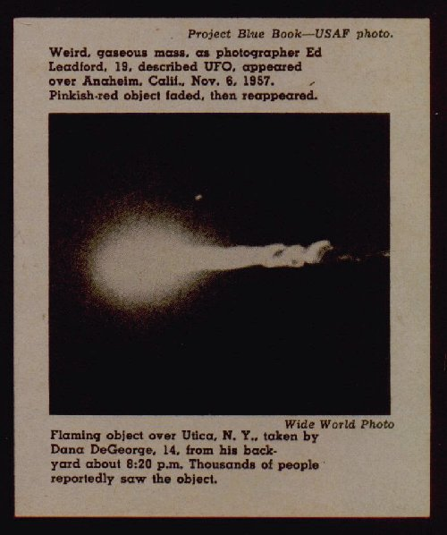
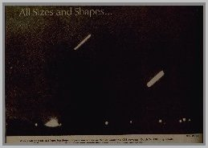
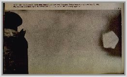
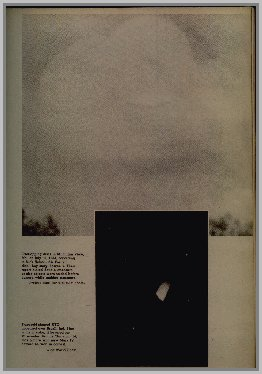
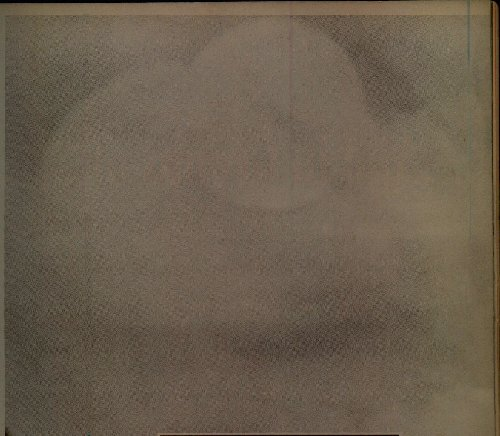
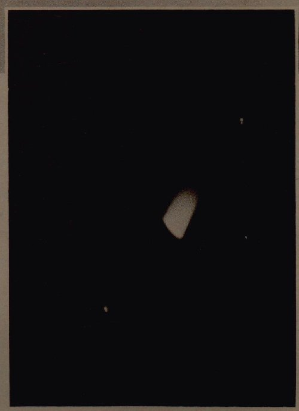

With some UFO's it's stretching a point to call them saucer-shaped. But whether they're round and thin, long and
stubby, or even shaped like home plate, they remain as baffling - and fascinating - as ever.
Masse gazeuse étrange, comme le photographe Ed Leadford (19 ans), a décrit l'OVNI, apparu au-dessus d'Anaheim
(Californie), . L'objet rouge-rosâtre s'est atténué, puis a réapparu Photo projet Blue Book - USAF.
Objet flamboyant au-dessus de Utica (New York), pris par Dana DeGeorge, 14 ans, depuis son jardin vers 20 h 20. Des
milliers de personnes auraient vu l'objet Photo Wide World.


After photo of these two long, bat-shaped objects was shown on Walter Chronkite's CBS newscast March 24, 1966, big
debate was sparked. Some said the Dexter, Mich., photo was merely time exposure of the moon and Venus [Photo UPI].

What looks like a baseball home plate jumped into view over Lawrence County farm show grounds July 30, 1966.
Photographer was lining up a shot of the milk can on left when UFO suddenly appeared [Photo UPI].

Disques se recouvrant à Mountain View (Mo.), , d'après buck Nelson, Air force n'a pas cru
l'histoire, cependant. Leur rapport parle de double-exposition ou d'autres objets furent tossed avant que l'appareil
prendre le cliché [Photo
Projet
Blue Book - USAF].

OVNI de forme trapézoïdale apparu au-dessus de Brazil (Ind.). De couleur bleu-blanc, il a été en l'air pendant 20
minutes. Ronnie thurston, 14 ans, prit la photo avec un nouvel appareil Mark IV qu'il avait gagné à un concours
[Photo
Wide World].
